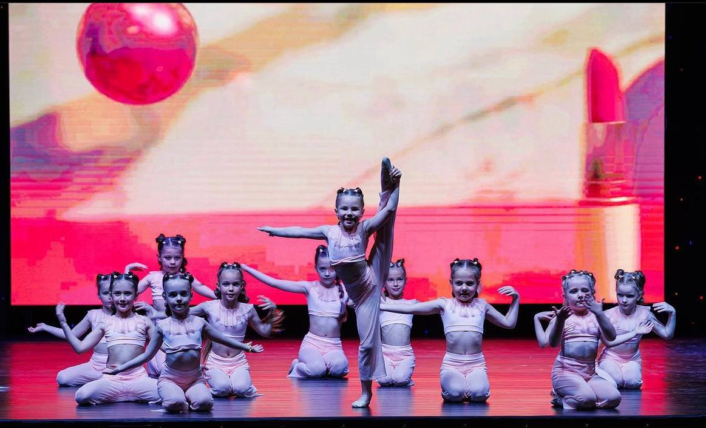
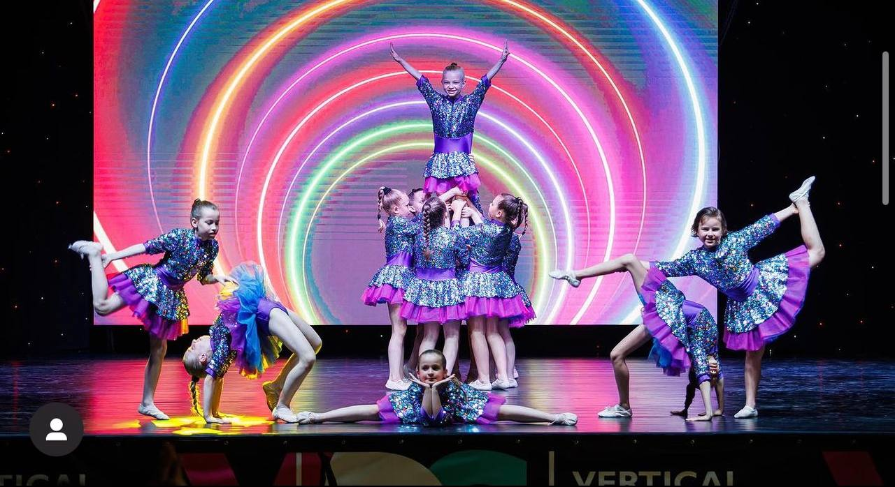
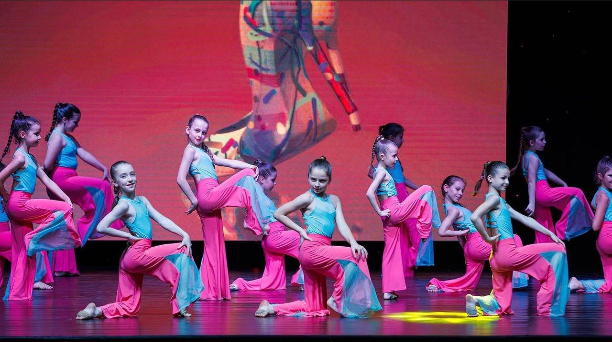

Сучасні танці - відповідають на запити актуального часу. Сьогодні серед найпопулярніших хіп-хоп, брейк-данс, айр-ен-бі (так звані вуличні), тектонік, джампстайл (клубні). Сучасні танці відображають настрій і течії конкретного часу. Це також певний стиль музики, одягу, поведінки і навіть світогляду. З цієї точки зору, 6-річному малюку танець афроамериканських хуліганів, не найкращий варіант для наслідування. Але підлітку сучасні танці допоможуть розкріпачитися, повірити в себе, позбутися від комплексів і підтягти своє тіло. Сучасні танці розвивають чіткість і спритність передачі рухів, вміння володіти власним тілом. Такі танці насичені безліччю елементів акробатики, пластики та акторської майстерності. Заняття частіше починають після 9-10 років.


